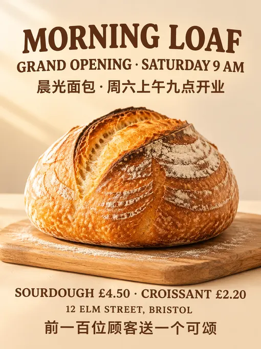
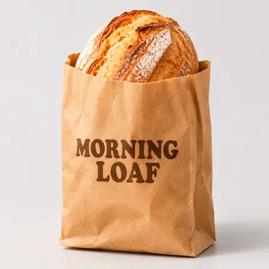
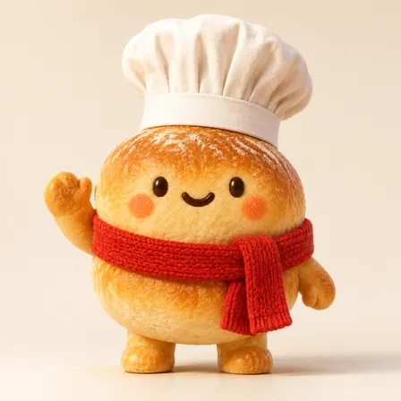
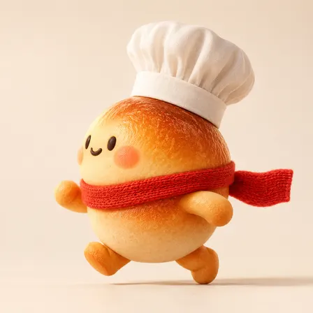
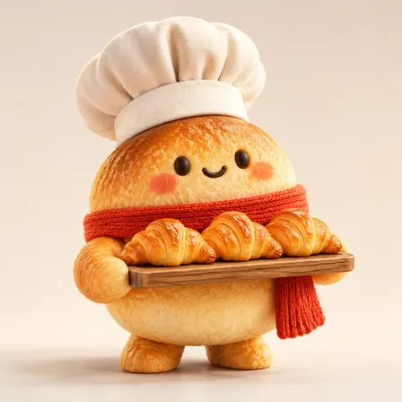
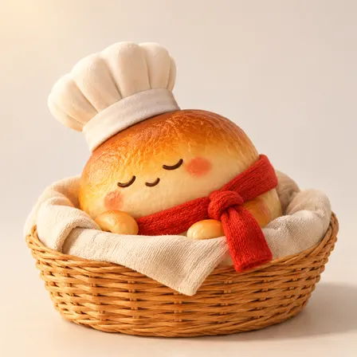

buluslan/gpt-image2-ecommerce: image test, 2026-11-08
The same brief for every skill: a 3:4 poster for a made-up bakery with six exact lines of English and Chinese text, a square photo of a kraft-paper bag printed with the shop's name, and four square pictures of one mascot in four poses. Claude Code (Claude Opus 5.5) made them with the skill in a throwaway sandbox; every image call went to the newest model of the family the skill asked for (GPT Image 2.6, Nano Banana 2.1 or FLUX 3). 6.5 minutes; 7 image calls ($0.059), drawn by gpt-image-2.6-ext. All results · The brief · How it is scored
Result
Followed the brief
The pictures












The text, read letter by letter
Read by OCR (macOS Vision, five passes); a line OCR could not find as written was looked at by hand.
| Asked for | Written |
|---|---|
| Morning Loaf | right |
| Grand opening · Saturday 9 am | right |
| 晨光面包 · 周六上午九点开业 | right |
| Sourdough £4.50 · Croissant £2.20 | right |
| 12 Elm Street, Bristol | right |
| 前一百位顾客送一个可颂 | right |
| Morning Loaf (on the bag) | right |
The mascots (judged by a vision model)
| Same character in all four (1-5) | 5 |
|---|---|
| Poses as asked (of 4) | 4 |
| Chef's hat and red scarf in all four | yes |
| Text on them | no |
The judge's note: All four clearly depict the same round bun mascot with matching colors, face, chef hat, and red scarf.
How it went (the session's closing message)
All six pictures are in `~/work/output/`. I made them with the gpt-image2-ecommerce skill (by buluslan, 公众号「新西楼.AI」), through OpenAI's image API. **What I did:** - **Templates:** `poster-banner` for the poster, `packaging` for the bread bag, and `creative-concept` for the four Bun pictures. Nothing in the skill's list matches "mascot", so I picked the closest template. - **Shared style:** because this is a set of six, the skill's Campaign Style Lock went at the start of every prompt. It uses the skill's food colours (warm cream, deep brown, red accent) and warm light from the top left. - **Model:** all six used `gpt-image-2.5-sunburst` at high quality, the skill's choice for finished images. - **Same character:** I made `mascot-1.png` first and sent it as the character reference for mascots 2–4, with a list of features to keep. **What I checked by looking at each image:** - **`poster.png`:** all six lines are spelled correctly, including "·", "£4.50", "£2.20" and both Chinese lines, and there is no other text. The service returned it at 768×1024 instead of the 1536×2048 I asked for, but that is still 3:4. - **`product.png`:** kraft bag on light grey with a sourdough loaf at the top and "MORNING LOAF" in dark brown, nothing else. - **Mascots:** Bun waves from the front, runs left in profile, carries a tray of three croissants, and sleeps in a wicker basket. The shape, crust colour, face, white hat and red scarf match across all four. - **Redo:** the first sleeping picture seemed to show three closed eyes. I regenerated it once with the same prompt. The new one reads as two closed eyes and a small smile, so I kept it. **Problems with the skill's script:** - **Every run reported failure.** `scripts/imagegen.sh` always says "failed" when the endpoint returns no cost figure, even after saving the image. I took the saved images from `/tmp`. - **The reference-image calls failed outright.** On Linux the script puts line breaks in the attached image data, which corrupts the request. For mascots 2–4 I sent the script's own request body with only those line breaks removed; the prompts and settings are unchanged. - **Neither bug is fixed in the skill**, so both will happen again on the next run. **Pre-check:** the skill's check marks every image "fail" on white background. That's expected, because the brief asks for grey or cream backgrounds and these aren't marketplace main images. I didn't record its other results. **Brief vs skill:** the skill puts English text in capitals, so the poster and bag read "MORNING LOAF", "GRAND OPENING · SATURDAY 9 AM", "12 ELM STREET, BRISTOL" and so on, instead of the brief's mixed case; the spelling is otherwise exact. DELIVERABLE: ~/work/output/